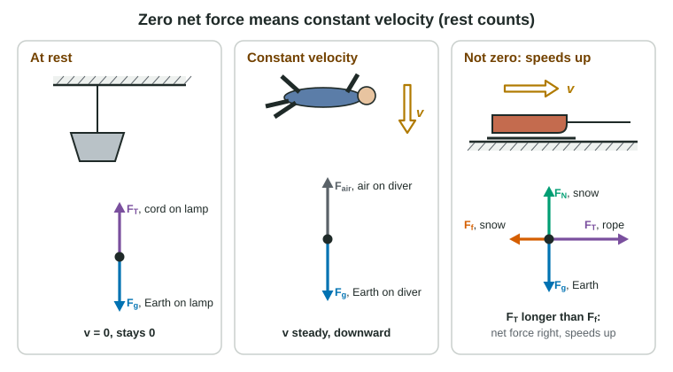

Shove a book across a table and it stops within a hand's width. Slide a hockey puck across smooth ice and it glides the length of the rink. It is easy to conclude that moving things naturally slow down and that something must keep pushing them to keep them going. Newton's first law says the opposite, and once you see why, most of this unit becomes simpler.
Zero net force, constant velocity
Newton's first law: if the net force on an object is zero, its velocity does not change. An object at rest stays at rest. An object that is moving keeps moving at the same speed in the same direction.
The book stops because the table rubs on it: friction is a net force pointing backward. The puck goes farther because the ice rubs much less. Take away all friction and air and the puck would never stop. Nothing is needed to keep something moving; a net force is needed to change how it moves.
This also works backward. If you see an object moving at a constant velocity, you know the forces on it balance. A car cruising at a steady 25 m/s on a straight road has a forward push from the road exactly equal to the air drag and other resistance. A skydiver falling at a steady speed has an air push upward equal to her weight.

Translational equilibrium
An object with zero net force is in translational equilibrium. "At rest" and "constant velocity" are both equilibrium; physics does not tell them apart. What breaks equilibrium is any change of velocity: speeding up, slowing down or turning.
Check equilibrium one direction at a time. Forces can balance up and down while they do not balance left and right. A sled being pulled faster and faster has its normal force and weight in balance, yet the rope's pull is larger than friction. So write two statements:
ΣFx = 0 and ΣFy = 0 (equilibrium)
Worked example 1. A worker pushes a crate at a constant 0.60 m/s across a floor. Friction on the crate is 90 N. How hard does the worker push?
Principle: constant velocity, so the crate is in translational equilibrium and ΣFx = 0.
Fpush − Ff = 0, so Fpush = Ff = 90 N.
Not more than 90 N. A push of 110 N would give a net force of 20 N forward, and the crate would speed up.
When a force is tilted, only part of it acts in each direction. Write the parts in your equations using sine and cosine, but keep the free-body diagram itself to whole forces.
Worked example 2. A 4.0 kg sign hangs at rest from two cords, each 30° above the horizontal on opposite sides. Find the tension in each cord. Use g = 9.8 m/s².
Free-body diagram: FT1 (left cord on sign) up and to the left; FT2 (right cord on sign) up and to the right; Fg (Earth on sign) down.
Horizontal: FT1 cos 30° = FT2 cos 30°, so the tensions are equal: call each FT.
Vertical: 2FT sin 30° − mg = 0, so FT = mg ÷ (2 sin 30°) = (4.0 kg)(9.8 m/s²) ÷ (2 × 0.50) = 39 N.
Each cord pulls with the full 39 N, not half of it, because only half of each pull points upward. Flatter cords need even larger tensions.
Inertia
Inertia is the name for an object's tendency to keep its velocity. The more mass an object has, the more inertia: a loaded shopping cart is harder to start and harder to stop than an empty one. Inertia is a property, not a force. Never draw it on a free-body diagram, and never say "inertia pushed the ball forward."
Inertial reference frames
The first law holds when you watch from the ground, or from a train or bus moving at constant velocity. These are inertial reference frames. A passenger on a smooth, steady bus who drops a coin sees it fall straight down to the spot below her hand, just as it would on the ground: the coin already moves forward with the bus, and nothing pushes it sideways.
Now the bus brakes hard. A ball on the floor rolls toward the front, as if pushed. Nothing pushes it. Watched from the road, the ball simply keeps going at its old velocity while the bus slows beneath it. A braking, speeding-up or turning vehicle is a noninertial frame: objects inside seem to lurch with no agent. In this course, analyze motion from an inertial frame such as the ground unless the problem says otherwise.
Common slips
The biggest one is the belief this page started with: drawing the forward force larger than friction for an object moving at constant speed. Constant velocity means balanced forces, full stop. Others: saying an object momentarily at rest (a ball at the top of its flight) is in equilibrium, when gravity still acts on it; calling inertia a force; and treating a constant-speed turn as equilibrium, when the direction, and so the velocity, is changing.